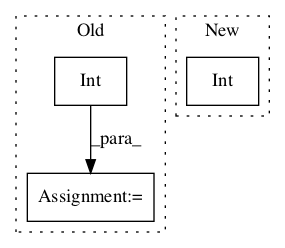

6ccde104316865fe94180c1f7b2c40333cb3113e,hyperpose/Model/pose_proposal/utils.py,,draw_bbx,#Any#Any#Any#Any#Any#Any#Any#,80

Before Change
y=ry[k][iy][ix]
w=rw[k][iy][ix]
h=rh[k][iy][ix]
img=cv2.circle(img,(int(x),int(y)),radius=2,color=color,thickness=-1)
img=cv2.rectangle(img,(int(x-w//2),int(y-h//2)),(int(x+w//2),int(y+h//2)),color,1)
return img
def draw_edge(img,img_e,rx,ry,rw,rh,hnei,wnei,hout,wout,limbs,threshold=0.7):
After Change
valid_idxs=np.where(img_pc>=threshold,1,0)
ks,iys,ixs=np.nonzero(valid_idxs)
h,w,_=img.shape
thickness=int(min(h,w)/100)
for k,iy,ix in zip(ks,iys,ixs):
x=rx[k][iy][ix]
y=ry[k][iy][ix]
w=rw[k][iy][ix]
In pattern: SUPERPATTERN
Frequency: 3
Non-data size: 3
Instances
Project Name: tensorlayer/openpose-plus
Commit Name: 6ccde104316865fe94180c1f7b2c40333cb3113e
Time:
Author: null
File Name: hyperpose/Model/pose_proposal/utils.py
Class Name:
Method Name: draw_bbx
Project Name: baldassarreFe/deep-koalarization
Commit Name: 4af0d6b993453f2c8aec62c4ff7a8c0b1c877f22
Time:
Author: null
File Name: dataset/resize.py
Class Name: ImagenetResizer
Method Name: resize_img
Project Name: emedvedev/attention-ocr
Commit Name: 4dc7f459148bd3bc14549d36bd7d09910ca917ca
Time:
Author: null
File Name: aocr/model/model.py
Class Name: Model
Method Name: __init__